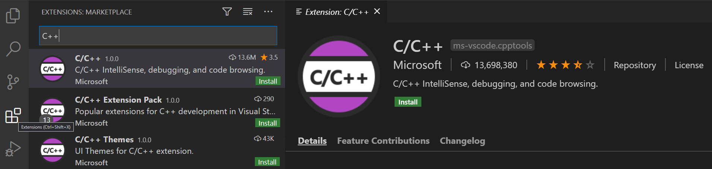
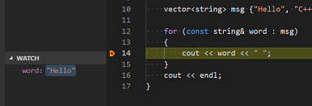

Configure VS Code for Microsoft C++
In this tutorial, you configure Visual Studio Code to use the Microsoft Visual C++ compiler and debugger on Windows.
After configuring VS Code, you will compile and debug a simple Hello World program in VS Code. This tutorial does not teach you details about the Microsoft C++ toolset or the C++ language. For those subjects, there are many good resources available on the Web.
If you have any problems, feel free to file an issue for this tutorial in the VS Code documentation repository.
Prerequisites
To successfully complete this tutorial, you must do the following:
Install Visual Studio Code.
Install the C/C++ extension for VS Code. You can install the C/C++ extension by searching for 'c++' in the Extensions view (
kb(workbench.view.extensions)).
Install the Microsoft Visual C++ (MSVC) compiler toolset.
If you have a recent version of Visual Studio, open the Visual Studio Installer from the Windows Start menu and verify that the C++ workload is checked. If it's not installed, then check the box and click the Modify button in the installer.
You can also install the Desktop development with C++ workload without a full Visual Studio IDE installation. From the Visual Studio Downloads page, scroll down until you see Tools for Visual Studio 2019 under the All Downloads section and select the download for Build Tools for Visual Studio 2019.
This will launch the Visual Studio Installer, which will bring up a dialog showing the available Visual Studio Build Tools workloads. Check the Desktop development with C++ workload and select Install.
Note: You can use the C++ toolset from Visual Studio Build Tools along with Visual Studio Code to compile, build, and verify any C++ codebase as long as you also have a valid Visual Studio license (either Community, Pro, or Enterprise) that you are actively using to develop that C++ codebase.
Check your Microsoft Visual C++ installation
To use MSVC from a command line or VS Code, you must run from a Developer Command Prompt for Visual Studio. An ordinary shell such as PowerShell, Bash, or the Windows command prompt does not have the necessary path environment variables set.
To open the Developer Command Prompt for VS, start typing 'developer' in the Windows Start menu, and you should see it appear in the list of suggestions. The exact name depends on which version of Visual Studio or the Visual Studio Build Tools you have installed. Click on the item to open the prompt.

You can test that you have the C++ compiler, cl.exe, installed correctly by typing 'cl' and you should see a copyright message with the version and basic usage description.
If the Developer Command Prompt is using the BuildTools location as the starting directory (you wouldn't want to put projects there), navigate to your user folder (C:\users\{your username}\) before you start creating new projects.
Create Hello World
From the Developer Command Prompt, create an empty folder called "projects" where you can store all your VS Code projects, then create a subfolder called "helloworld", navigate into it, and open VS Code (code) in that folder (.) by entering the following commands:
mkdir projects
cd projects
mkdir helloworld
cd helloworld
code .
The "code ." command opens VS Code in the current working folder, which becomes your "workspace". As you go through the tutorial, you will see three files created in a .vscode folder in the workspace:
tasks.json(build instructions)launch.json(debugger settings)c_cpp_properties.json(compiler path and IntelliSense settings)
Add a source code file
In the File Explorer title bar, select the New File button and name the file helloworld.cpp.

Add hello world source code
Now paste in this source code:
#include <iostream>
#include <vector>
#include <string>
using namespace std;
int main()
{
vector<string> msg {"Hello", "C++", "World", "from", "VS Code", "and the C++ extension!"};
for (const string& word : msg)
{
cout << word << " ";
}
cout << endl;
}
Now press kb(workbench.action.files.save) to save the file. Notice how the file you just added appears in the File Explorer view (kb(workbench.view.explorer)) in the side bar of VS Code:
You can also enable Auto Save to automatically save your file changes, by checking Auto Save in the main File menu.
The Activity Bar on the far left lets you open different views such as Search, Source Control, and Run. You'll look at the Run view later in this tutorial. You can find out more about the other views in the VS Code User Interface documentation.
Note: When you save or open a C++ file, you may see a notification from the C/C++ extension about the availability of an Insiders version, which lets you test new features and fixes. You can ignore this notification by selecting the
X(Clear Notification).
Explore IntelliSense
In your new helloworld.cpp file, hover over vector or string to see type information. After the declaration of the msg variable, start typing msg. as you would when calling a member function. You should immediately see a completion list that shows all the member functions, and a window that shows the type information for the msg object:

You can press the kbstyle(Tab) key to insert the selected member; then, when you add the opening parenthesis, you will see information about any arguments that the function requires.
Build helloworld.cpp
Next, you will create a tasks.json file to tell VS Code how to build (compile) the program. This task will invoke the Microsoft C++ compiler to create an executable file based on the source code.
From the main menu, choose Terminal > Configure Default Build Task. In the dropdown, which will display a tasks dropdown listing various predefined build tasks for C++ compilers. Choose cl.exe build active file, which will build the file that is currently displayed (active) in the editor.

This will create a tasks.json file in a .vscode folder and open it in the editor.
Your new tasks.json file should look similar to the JSON below:
{
"version": "2.0.0",
"tasks": [
{
"type": "shell",
"label": "cl.exe build active file",
"command": "cl.exe",
"args": [
"/Zi",
"/EHsc",
"/Fe:",
"${fileDirname}\\${fileBasenameNoExtension}.exe",
"${file}"
],
"problemMatcher": [
"$msCompile"
],
"group": {
"kind": "build",
"isDefault": true
}
}
]
}
The command setting specifies the program to run; in this case that is "cl.exe". The args array specifies the command-line arguments that will be passed to cl.exe. These arguments must be specified in the order expected by the compiler. This task tells the C++ compiler to take the active file (${file}), compile it, and create an executable file (/Fe: switch) in the current directory (${fileDirname}) with the same name as the active file but with the .exe extension (${fileBasenameNoExtension}.exe), resulting in helloworld.exe for our example.
Note: You can learn more about
tasks.jsonvariables in the variables reference.
The label value is what you will see in the tasks list; you can name this whatever you like.
The problemMatcher value selects the output parser to use for finding errors and warnings in the compiler output. For cl.exe, you'll get the best results if you use the $msCompile problem matcher.
The "isDefault": true value in the group object specifies that this task will be run when you press kb(workbench.action.tasks.build). This property is for convenience only; if you set it to false, you can still run it from the Terminal menu with Tasks: Run Build Task.
Running the build
Go back to
helloworld.cpp. Your task builds the active file and you want to buildhelloworld.cpp.To run the build task defined in
tasks.json, presskb(workbench.action.tasks.build)or from the Terminal main menu choose Tasks: Run Build Task.When the task starts, you should see the Integrated Terminal panel appear below the source code editor. After the task completes, the terminal shows output from the compiler that indicates whether the build succeeded or failed. For a successful C++ build, the output looks something like this:
Create a new terminal using the + button and you'll have a new terminal (running PowerShell) with the
helloworldfolder as the working directory. Runlsand you should now see the executablehelloworld.exealong with various intermediate C++ output and debugging files (helloworld.obj,helloworld.pdb).You can run
helloworldin the terminal by typing.\helloworld.exe.
Note: You might need to press
kbstyle(Enter)a couple of times initially to see the PowerShell prompt in the terminal. This issue should be fixed in a future release of Windows.
Modifying tasks.json
You can modify your tasks.json to build multiple C++ files by using an argument like "${workspaceFolder}\\*.cpp" instead of ${file}. This will build all .cpp files in your current folder. You can also modify the output filename by replacing "${fileDirname}\\${fileBasenameNoExtension}.exe" with a hard-coded filename (for example "${workspaceFolder}\\myProgram.exe").
Debug helloworld.cpp
Next, you'll create a launch.json file to configure VS Code to launch the Microsoft C++ debugger when you press kb(workbench.action.debug.start) to debug the program. From the main menu, choose Run > Add Configuration... and then choose C++ (Windows).
You'll then see a dropdown for various predefined debugging configurations. Choose cl.exe build and debug active file.

VS Code creates a launch.json file, opens it in the editor, and builds and runs 'helloworld'.
{
"version": "0.2.0",
"configurations": [
{
"name": "cl.exe build and debug active file",
"type": "cppvsdbg",
"request": "launch",
"program": "${fileDirname}\\${fileBasenameNoExtension}.exe",
"args": [],
"stopAtEntry": false,
"cwd": "${workspaceFolder}",
"environment": [],
"externalConsole": false,
"preLaunchTask": "cl.exe build active file"
}
]
}
The program setting specifies the program you want to debug. Here it is set to the active file folder ${fileDirname} and active filename with the .exe extension ${fileBasenameNoExtension}.exe, which if helloworld.cpp is the active file will be helloworld.exe.
By default, the C++ extension won't add any breakpoints to your source code and the stopAtEntry value is set to false. Change the stopAtEntry value to true to cause the debugger to stop on the main method when you start debugging.
Start a debugging session
- Go back to
helloworld.cppso that it is the active file. - Press
kb(workbench.action.debug.start)or from the main menu choose Run > Start Debugging. Before you start stepping through the source code, let's take a moment to notice several changes in the user interface:
The Integrated Terminal appears at the bottom of the source code editor. In the Debug Output tab, you see output that indicates the debugger is up and running.
The editor highlights the first statement in the
mainmethod. This is a breakpoint that the C++ extension automatically sets for you:
The Run view on the left shows debugging information. You'll see an example later in the tutorial.
At the top of the code editor, a debugging control panel appears. You can move this around the screen by grabbing the dots on the left side.
Step through the code
Now you're ready to start stepping through the code.
Click or press the Step over icon in the debugging control panel until the
for (const string& word : msg)statement is highlighted.
The Step Over command skip over all the internal function calls within the
vectorandstringclasses that are invoked when themsgvariable is created and initialized. Notice the change in the Variables window on the left. In this case, the errors are expected because, although the variable names for the loop are now visible to the debugger, the statement has not executed yet, so there is nothing to read at this point. The contents ofmsgare visible, however, because that statement has completed.Press Step over again to advance to the next statement in this program (skipping over all the internal code that is executed to initialize the loop). Now, the Variables window shows information about the loop variables.
Press Step over again to execute the
coutstatement. Note As of the March 2019 version of the extension, no output is displayed until the loop completes.If you like, you can keep pressing Step over until all the words in the vector have been printed to the console. But if you are curious, try pressing the Step Into button to step through source code in the C++ standard library!
To return to your own code, one way is to keep pressing Step over. Another way is to set a breakpoint in your code by switching to the
helloworld.cpptab in the code editor, putting the insertion point somewhere on thecoutstatement inside the loop, and pressingkb(editor.debug.action.toggleBreakpoint). A red dot appears in the gutter on the left to indicate that a breakpoint has been set on this line.
Then press
kb(workbench.action.debug.start)to start execution from the current line in the standard library header. Execution will break oncout. If you like, you can presskb(editor.debug.action.toggleBreakpoint)again to toggle off the breakpoint.
Set a watch
Sometimes you might want to keep track of the value of a variable as your program executes. You can do this by setting a watch on the variable.
Place the insertion point inside the loop. In the Watch window, click the plus sign and in the text box, type
word, which is the name of the loop variable. Now view the Watch window as you step through the loop.
Add another watch by adding this statement before the loop:
int i = 0;. Then, inside the loop, add this statement:++i;. Now add a watch forias you did in the previous step.To quickly view the value of any variable while execution is paused on a breakpoint, you can hover over it with the mouse pointer.

C/C++ configurations
If you want more control over the C/C++ extension, you can create a c_cpp_properties.json file, which will allow you to change settings such as the path to the compiler, include paths, C++ standard (default is C++17), and more.
You can view the C/C++ configuration UI by running the command C/C++: Edit Configurations (UI) from the Command Palette (kb(workbench.action.showCommands)).

This opens the C/C++ Configurations page. When you make changes here, VS Code writes them to a file called c_cpp_properties.json in the .vscode folder.
Visual Studio Code places these settings in .vscode\c_cpp_properties.json. If you open that file directly, it should look something like this:
{
"configurations": [
{
"name": "Win32",
"includePath": [
"${workspaceFolder}/**"
],
"defines": [
"_DEBUG",
"UNICODE",
"_UNICODE"
],
"windowsSdkVersion": "10.0.18362.0",
"compilerPath": "C:/Program Files (x86)/Microsoft Visual Studio/2019/BuildTools/VC/Tools/MSVC/14.24.28314/bin/Hostx64/x64/cl.exe",
"cStandard": "c11",
"cppStandard": "c++17",
"intelliSenseMode": "msvc-x64"
}
],
"version": 4
}
You only need to add to the Include path array setting if your program includes header files that are not in your workspace or in the standard library path.
Compiler path
The compilerPath setting is an important setting in your configuration. The extension uses it to infer the path to the C++ standard library header files. When the extension knows where to find those files, it can provide useful features like smart completions and Go to Definition navigation.
The C/C++ extension attempts to populate compilerPath with the default compiler location based on what it finds on your system. The extension looks in several common compiler locations.
The compilerPath search order is:
- First check for the Microsoft Visual C++ compilerOpe
- Then look for g++ on Windows Subsystem for Linux (WSL)
- Then g++ for Mingw-w64.
If you have g++ or WSL installed, you might need to change compilerPath to match the preferred compiler for your project. For Microsoft C++, the path should look something like this, depending on which specific version you have installed: "C:/Program Files (x86)/Microsoft Visual Studio/2017/BuildTools/VC/Tools/MSVC/14.16.27023/bin/Hostx64/x64/cl.exe".
Reusing your C++ configuration
VS Code is now configured to use the Microsoft C++ compiler. The configuration applies to the current workspace. To reuse the configuration, just copy the JSON files to a .vscode folder in a new project folder (workspace) and change the names of the source file(s) and executable as needed.
Troubleshooting
The term 'cl.exe' is not recognized
If you see the error "The term 'cl.exe' is not recognized as the name of a cmdlet, function, script file, or operable program.", this usually means you are running VS Code outside of a Developer Command Prompt for Visual Studio and VS Code doesn't know the path to the cl.exe compiler.
You can always check that you are running VS Code in the context of the Developer Command Prompt by opening a new Terminal (kb(workbench.action.terminal.new)) and typing 'cl' to verify cl.exe is available to VS Code.
Next steps
- Explore the VS Code User Guide.
- Review the Overview of the C++ extension.
- Create a new workspace, copy your
.vscodeJSON files to it, adjust the necessary settings for the new workspace path, program name, and so on, and start coding!